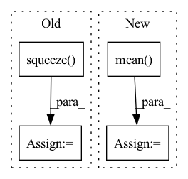

Pattern ID :21611

Before Change
def calculate_activation_statistics(self, samples):
with torch.no_grad():
features = self.model_InceptionV3(samples)[0]
features_np = features.squeeze(3).squeeze(2).cpu().numpy()
mu = np.mean(features_np, axis=0)
sigma = np.cov(features_np, rowvar=False)
return mu, sigma
After Change
features = self.inception_v3(samples)[0]
features = rearrange(features, "... 1 1 -> ...")
mu = torch.mean(features, dim = 0).cpu()
sigma = torch.cov(features).cpu()
return mu, sigma
In pattern: SUPERPATTERN
Frequency: 4
Non-data size: 4
Instances
Fragment ID: 68985868
Project Name: lucidrains/denoising-diffusion-pytorch
Commit Name: 64061aff4006b80c20f34dc2f5508326750fc1b4
Time: 2023-03-02
Author: lucidrains@gmail.com
File Name: denoising_diffusion_pytorch/denoising_diffusion_pytorch.py
M Class Name: Trainer
N Class Name: Trainer
M Method Name: calculate_activation_statistics(2)
N Method Name: calculate_activation_statistics(2)
M Parent Class: object
N Parent Class: object
M File Name: denoising_diffusion_pytorch/denoising_diffusion_pytorch.py
N File Name: denoising_diffusion_pytorch/denoising_diffusion_pytorch.py
M Start Line: 915
M End Line: 921
N Start Line: 931
N End Line: 935
'>
Before Change
eps = self.eps
loss = - target * torch.log(input + eps) - (1 - target) * torch.log(1 - input + eps)
loss = loss.squeeze(dim=1).mean(dim=1)
if batch_mean:
loss = loss.mean(dim=0)
After Change
dim = tuple(range(1, n_dims))
if reduction == "mean":
loss = loss.mean(dim=dim)
elif reduction == "sum":
loss = loss.sum(dim=dim)
if batch_mean:
'>
Fragment ID: 68985929
Project Name: tky823/dnn-based_source_separation
Commit Name: 56f95a42611aeaeb3499f097d347a17787656474
Time: 2021-12-04
Author: delta9guitar97@gmail.com
File Name: src/criterion/entropy.py
M Class Name: BinaryCrossEntropy
N Class Name: BinaryCrossEntropy
M Method Name: forward(4)
N Method Name: forward(4)
M Parent Class: nn.Module
N Parent Class: nn.Module
M File Name: src/criterion/entropy.py
N File Name: src/criterion/entropy.py
M Start Line: 22
M End Line: 23
N Start Line: 21
N End Line: 34
'>
Before Change
// Only reconstruct the Y channel image data.
with torch.no_grad():
sr_tensor_y = model(lr_tensor_y).clamp_(0., 1.)
sr_image_y = sr_tensor_y.mul(255.0).cpu().numpy().squeeze(0).squeeze(0)
sr_image = np.array([sr_image_y, lr_ycbcr[..., 1], lr_ycbcr[..., 2]]).transpose([1, 2, 0])
sr_image = np.clip(imgproc.convert_ycbcr_to_rgb(sr_image), 0.0, 255.0).astype(np.uint8)
sr_image = Image.fromarray(sr_image)
sr_image.save(sr_path)
After Change
sr_tensor_y = model(lr_tensor_y).clamp_(0.0, 1.0)
// Cal PSNR
total_psnr += 10. * torch.log10(1. / torch.mean((sr_tensor_y - lr_tensor_y) ** 2))
sr_image_y = sr_tensor_y.mul_(255.0).cpu().squeeze_(0).squeeze_(0).numpy()
sr_image = np.array([sr_image_y, lr_ycbcr[..., 1], lr_ycbcr[..., 2]]).transpose([1, 2, 0])
'>
Fragment ID: 68985850
Project Name: lornatang/srcnn-pytorch
Commit Name: b957357cc1bbc6e96762df844df48a3e6464fd90
Time: 2021-11-05
Author: liuchangyu1111@gmail.com
File Name: validate.py
M Class Name: AnonimousClass
N Class Name: AnonimousClass
M Method Name: main(0)
N Method Name: main(0)
M Parent Class:
N Parent Class:
M File Name: validate.py
N File Name: validate.py
M Start Line: 177
M End Line: 221
N Start Line: 50
N End Line: 89
'>
Before Change
eps = self.eps
loss = - target * torch.log(input + eps) - (1 - target) * torch.log(1 - input + eps)
loss = loss.squeeze(dim=1).mean(dim=1)
if batch_mean:
loss = loss.mean(dim=0)
After Change
dim = tuple(range(1, n_dims))
if reduction == "mean":
loss = loss.mean(dim=dim)
elif reduction == "sum":
loss = loss.sum(dim=dim)
if batch_mean:
'>
Fragment ID: 68985877
Project Name: tky823/dnn-based_source_separation
Commit Name: 56f95a42611aeaeb3499f097d347a17787656474
Time: 2021-12-04
Author: delta9guitar97@gmail.com
File Name: src/criterion/entropy.py
M Class Name: CrossEntropy
N Class Name: CrossEntropy
M Method Name: forward(4)
N Method Name: forward(4)
M Parent Class: nn.Module
N Parent Class: nn.Module
M File Name: src/criterion/entropy.py
N File Name: src/criterion/entropy.py
M Start Line: 44
M End Line: 47
N Start Line: 55
N End Line: 69